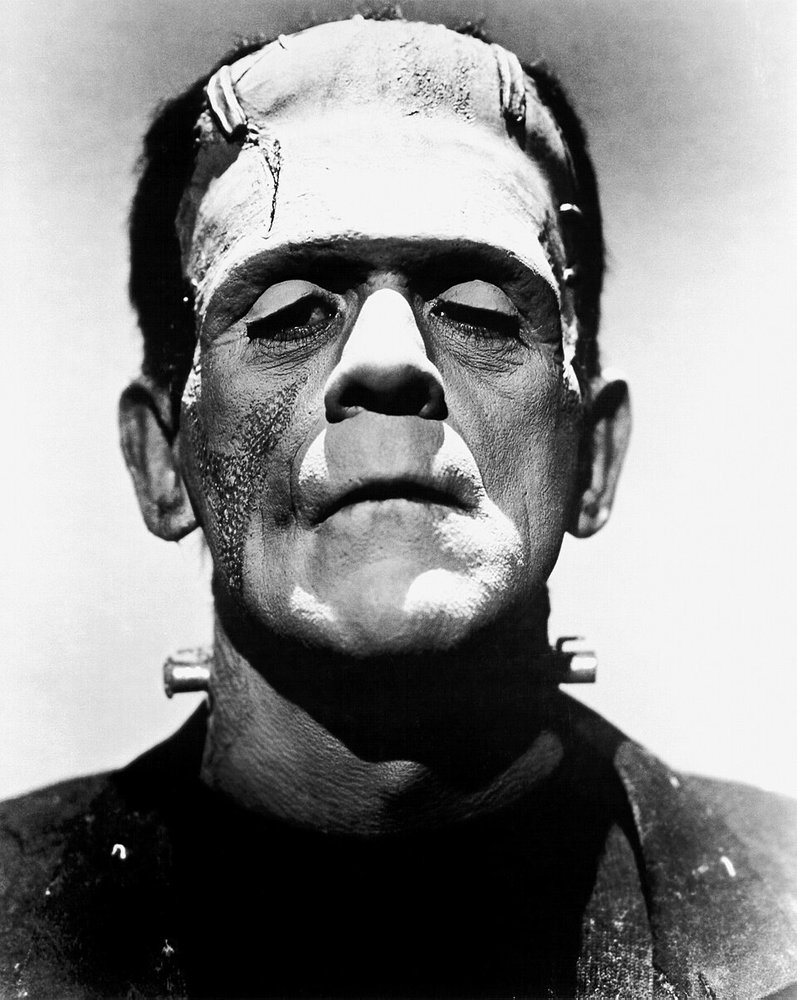

Bride of Frankenstein, Publicity Photograph (Boris Karloff as the Monster)
James Whale · 1935 · Publicity still, black and white
In copyright. Look and learn: shown for study, not for download.
Shooting began on 2 January 1935 with a projected budget of $293,750 and a schedule of 36 days. Boris Karloff objected strongly to the decision to let the Monster speak. Because he now had lines, he could not take out his dental plate, so his cheeks lost the sunken look they had in the first film. The make-up artist Jack Pierce changed the Monster's make-up as filming went on to show his injuries healing.